3.1.1 Scope of the work
3.1.2 Gasifier for wood chips
3.1.3 Fibre glass fabric filter system
3.1.4 Conversion of diesel engines to producer gas operation
3.1.5 Tests with different fuels
The objective of the development work, which started in 1957, has been to develop a standard type of wood gasifier system which could be made in a limited range of sizes and be used for vehicles currently operated in Sweden. Later, the development was focussed on the utilization of wood chips as fuel for the reasons explained earlier.
The development of a gasifier system for passenger cars was carried out-by the Swedish car manufacturer Volvo. The results of this work are proprietary.
The development of gasifier systems suitable for farm tractors, buses and lorries, was carried out by the National Swedish Testing Institute for Agricultural Machinery.
This work included the following elements:
1. Development of a downdraught gasifier suitable for wood chips and establishment of design rules for such gasifiers.2. Development of a fibre glass fabric filter system for wood gas.
3. Studies of conversion of direct injection diesel engines to dual fuel operation and preparation of guidelines for conversion of such engines.
4. Field testing of a limited number of vehicles.
The results of the work carried out up to 1962 have been reported (in Swedish) by Nordstrom (33). There is no official report from the work done thereafter. In the latter part of this section, the results of the equipment development work will be summarized. The results from the field tests are summarized in Section 3.2.
Towards the end of the Second World War, gasifiers for vehicles using wood blocks as fuel had been developed to a stage where the technology appeared to be reasonably reliable. Design rules for matching the gasifier dimensions to the size and operating conditions of the engine were fairly well established. The design rules used at that time in Sweden have been summarized in (43).
The first tests with wood chips reported by Nordstrom (33) in 1963 were made in a modified Imbert type downdraft gasifier with a V-hearth, see Fig. 3.1, with a fixed grate. The experiences were quite distressing. Bridging in the fuel bunker gave irregular flow of fuel in the gasifier. Clogging of the reduction zone leading to a large pressure drop of the gasifier appeared after less than one hour of operation. High tar content was observed for some tests.
It was soon concluded that a moving grate was necessary for wood chips to be used as fuel. The bridging problem was found to be associated with sticking of the fuel to the wall in the pyrolysis zone where some of the tars driven off from the fuel condensed and caused a sticky surface. The problem was reduced to what was considered acceptable by the introduction of a baffle in the fuel bunker for the purpose of eliminating contact between the fuel and the walls, in the pyrolysis zone, see Fig. 3.2.
Figure 3-1. Modified Imbert-type downdraft gasifier with V-hearth tested by Nordstrom (33)
Figure 3.2 Sketches of standard type gasifiers for wood chips and wood blocks - a. Wood chip design
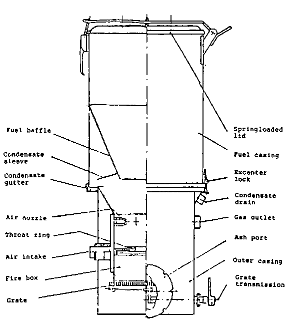
Figure 3.2 Sketches of standard type gasifiers for wood chips and wood blocks - b. Adaptation for wood blocks
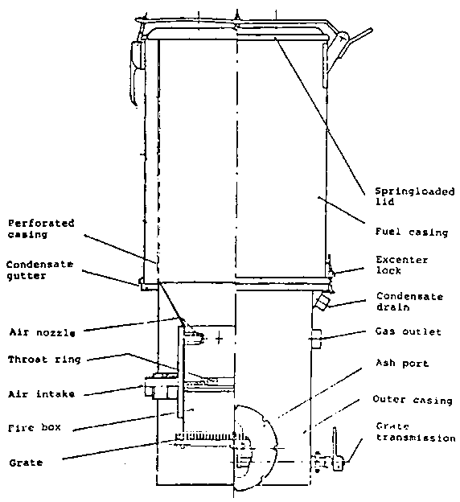
The main dimensions of the three standard sizes of gasifiers, each with four combinations of choke plate and nozzle sizes, are shown in Table 3.2 and Fig. 3.3.
In comparison with the design guidelines for wood block gasifiers presented in Chapter 2, the maximum "hearth load" B defined as the superficial velocity of gas through the narrowest section of the gasifier is generally slightly higher, i.e. about 1.0 m /cm h., and the turn-down ratio higher, i.e. about 6 - 9. The dimensions of the standard designs for wood chip gasifiers show the following differences from the recommendations in Chapter 2.
- The number of air nozzles is generally larger.- The ratio of the nozzle area to the throat area varies in somewhat different ways for the three standard sizes of the firebox, see Fig. 3.4.a.
- The ratio of the firebox diameter to the throat diameter d/d is generally higher than recommended for wood blocks.
- The ratio of the nozzle tip diameter to the throat diameter d t/d is generally greater than recommended for wood blocks.
- The height of the reduction zone is much less than the average of 32 cm for wood block gasifiers and for the smallest sizes even below the minimum height of 20 cm recommended in Chapter 2 for wood blocks.
Other features of the standard gasifiers for wood chips are that the gas is brought out of the gasifier at about the throat level and that the outer surface of the upper part of the gasifier acts as a cooling surface for condensation of water and tars. The condensate is drained into a separate vessel located close to the gasifier.
The main advent-age of this system is that it is possible to drain-off condensates which form after shut-down of the operation when the gasifier cools off. The condensate may otherwise wet the charcoal bed in the fire-zone and cause difficulties to re-ignite the gasifier. There will also be some drying of the fuel as indicated by tests reported by Nordstrom (33). According to these, 60 - 80 percent of the moisture in the wood fed into the gasifier can be drained off from the condensate jacket.
Table 3.2 Main dimensions of standard type gasifiers for wood chips
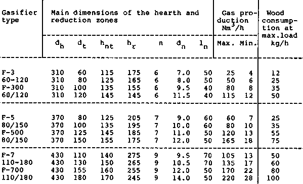
|
Dimensions of the fuel container (mm) | ||||
|
dB |
627 |
627 |
627 |
720 |
|
hB |
790 |
930 |
1270 |
1450 |
|
h1 |
340 |
480 |
820 |
900 |
|
h2 |
220 |
360 |
700 |
610 |
|
total volume dm³ |
155 |
199 |
304 |
401 |
Figure 3.3 Main dimensions of standard type gasifiers for wood chips
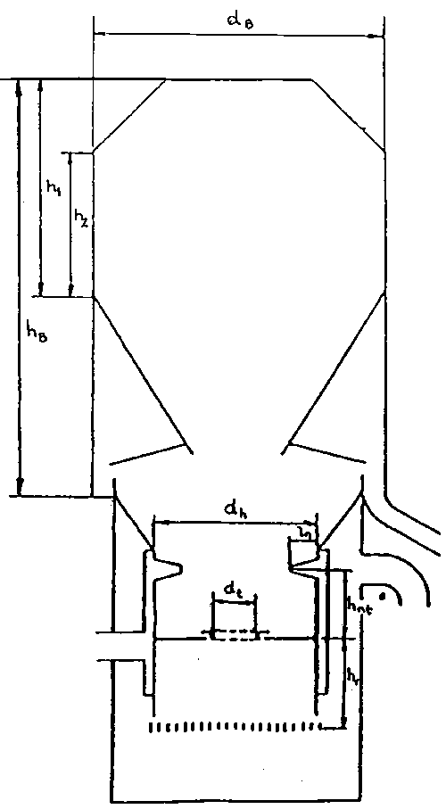
Figure 3.4 Design guidelines for down-draft gasifiers - a. Ratio between nozzle flow area, An, and throat area, At, as a function of the throat diameter.
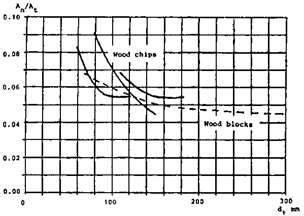
Figure 3.4 Design guidelines for down-draft gasifiers - b. Diameter of the fire box, dr, as a function of the throat diameter, dt.
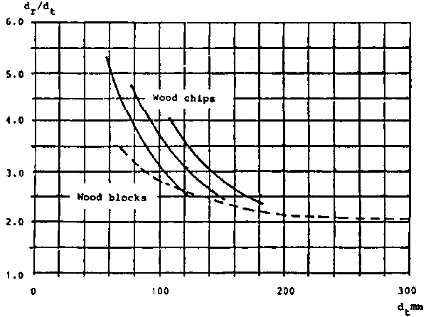
Figure 3.4 Design guidelines for down-draft gasifiers - c. Nozzle tip ring diameter, dnt, as a function of the throat diameter, dt.
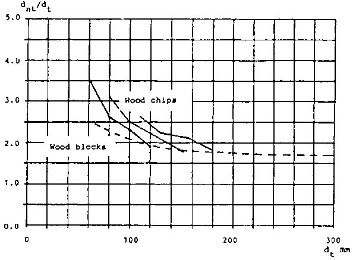
Figure 3.4 Design guidelines for down-draft gasifiers - d. Height of the nozzle plane above the throat, hnt, as a function of the throat diameter
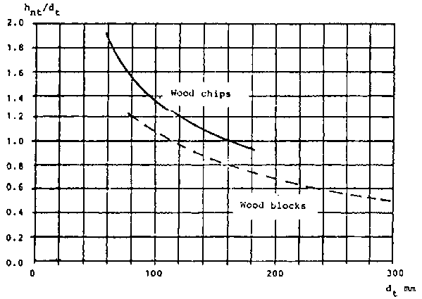
The throat section is built-up by a loose throat ring resting on a support ring which can be placed at different levels below the nozzle tip plane by variation of the number of distance rings between the support ring and the brackets welded to the fire-box wall. This throat ring can easily be changed to adapt the gasifier to new operating conditions, and it can also easily be replaced if damaged by overheating.
The overall cold gas efficiency of this type of gasifier defined as:
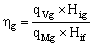
where
h g = overall cold gas efficiency
qVg = gas volume flow
qMf = fuel mass flow
Hig = lower gas heating value
Hif = lower fuel heating value
has been determined as about 70 percent over a load range from 100 per cent to 20 percent. The tar content of the gas has been determined between 0.04 and 0.20 g/m³ over the practical load range. The tar content can be compared with the guidelines given by Tiedema et al (42) according to which the tar content should be less than 0.5 g/m³ if the gas is to be suitable as fuel for an internal combustion engine .
The gas cleaning for a typical wood gasifier system used in the Second World War was accomplished by a cyclone, a gas cooler with some scrubbing action and a packed bed filter, see Fig. 3.5a.
Systematic tests with this type of gas cleaning system have been reported by Nordström (33) according to which deposits were accumulated in the gas-air mixer and the inlet manifold at a rate of 1 - 2 g/h. The engine wear and the contamination of the lubrication oil exceeded considerably those observed on diesel fuel operation.
After considering several possibilities for improved gas cleaning systems such as fabric filters, electrostatic filters and wet scrubbers, fabric filters using a glassfibre cloth as filtering material were selected as most suitable for vehicle applications.
Figure 3.5 Gas cleaning systems for vehicles tested by Nordstrom (33) - a. Traditional wet cleaning system
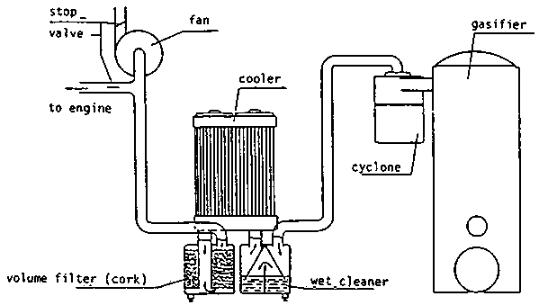
Glass-fibre cloth has a maximum operating temperature of about 300°C, which means that it is possible to operate the filter at a temperature giving a large margin over the dew-point of the gas. This is 45-60°C when wood with a moisture content of 20-35 percent is used as fuel. Operation of a fabric filter with condensation in the filter leads to a very high pressure drop across the filter and consequently a reduced power output of the engine.
To study engine wear and contamination of the lubricant oil comparative tests with wood gas operation using a fabric filter cleaning system, Fig. 3.5b, and diesel fuel operation were carried out with three farm tractors in field conditions. It was found, see Table 3.3, that the cylinder wear was considerably less than for the old type of cleaning system and in some cases even less than for operation on diesel fuel. A similar result was found for contamination of the lubricant oil. Dust concentrations after cleaning were 0.3 mg/m³ with the fabric filter system, as compared with 200 - 400 mg/m³ for the wet cleaning system. It can be observed that Tiedema et al (42) consider that less than 50 mg/m³ is acceptable, and less than 5 mg/m³ is preferred.
After tests with different filter configurations, a standard filter box, see Fig. 3.6, was designed in which 8 filter bags giving a total filter surface of 3.0 m are placed. The box is insulated with 10 mm thick layer of mineral wool. The weight of a complete filter box is 65.5 kg.
It is recommended that the maximum gas flow through one filter box shall be less than about 65 m /h, giving an equivalent velocity through the filter fabric of 0.01 m/s at the operating temperature of 200°C.
The pressure loss over the filter depends on the load, and the amount of dust in the filter. If condensation occurs in the filter, and the fabric gets wet, the pressure loss will increase considerably.
For dry fabric with a normal dust layer, the pressure loss will vary with the load, approximately as in Table 3.4.
Practical tests with a truck (Scania Vabis L75, see Table 3.11), to study the increase of pressure loss with dust accumulation, show that for driving at 60 km/in on a flat road with clean filter bags, the pressure loss was about 150200 mm Wg up to 500 - 750 km (i.e. 8 - 12 h). The pressure loss then increased by 60 - 75 mm Wg per 1000 km. After 3000 km (i.e. 50 h) the pressure loss had increased to twice the value for clean filter bags.
Table 3.3 Experiences with different gas cleaning systems reported by Nordström (33)
|
Tractor number |
01 |
02 |
03 |
06 |
08 | |
|
Cylinder wear tests | ||||||
|
Straight diesel operation (similar type of tractor) mm/1000 h |
0.016 |
0.028 |
0.031 |
0.005-0.010 |
0.020 | |
|
Producer gas/diesel operation |
|
|
|
|
| |
|
|
Test period, h |
910 |
1540 |
420 |
|
|
|
|
Wear mm/1000 h |
0.05 |
0.05 |
0.06 |
|
|
|
Producer gas/diesel operation |
|
|
|
|
| |
|
|
Test period, h |
|
|
1440 |
1860 |
1860 |
|
|
Wear mm/1000 h |
|
|
0.007 |
0.019 |
0.011 |
|
Oil contamination (expressed as amounts of insoluble products in benzene after 100 h) | ||||||
|
Straight diesel operation |
|
0.2 - 0.3 % |
|
| ||
|
Producer gas/diesel operation, old type of cleaning system |
|
0.54 - 1.97 % (average 0.75 %) |
|
| ||
|
Producer gas/diesel operation, fabric filter cleaning system |
|
|
|
|
0.12 % | |
The cleaning interval in practical operation is determined by how much power loss, resulting from pressure drop in filter, the driver is willing to accept. Normal cleaning intervals range between 1500 and 3000 km.
Measurements of pressure losses caused by condensation in the filter bags, see Nordstrom (33) show that the moisture may increase the pressure drop by a factor of over 6. In order to avoid condensation, the gasifier should be operated with the starting fan until the gas temperature at the outlet of the gasifier is about 250°C. This may require fan operation for 15 - 20 minutes, depending on-the ambient temperature.
Table 3.4 Pressure loss over fabric filter
|
Gas flow m³/hm² |
Pressure loss mm Wg 1/ |
|
10 |
130 |
|
20 |
250 |
|
30 |
380 |
|
40 |
500 |
1/ mm H2O measured with a water gauge
a) Conversion to spark ignition
Detailed studies of conversion of two diesel engines from Swedish manufacturers, Volvo and Bolinder-Munktell, to spark ignition for operation on straight producer gas were carried out in 1957-1963 and have been reported by Nordstrom (33).
The modifications included replacement of the cylinder head to allow fitting of spark plugs, replacement of the injection pump by a distributor, and use of special producer gas pistons giving a lower compression ratio. Different shapes of the combustion chamber were tested on one of the engines.
Table 3.5 gives a summary of leading data and performance of the two engines studied. The conversion cost for the engine only, recalculated to the 1984 US dollar rate was found to be about 40 - 50 $/kW. l
Table 3.5 Data and performance of two diesel engines converted to spark ignition for straight producer gas operation
|
Engine type |
Volvo D47 |
Bolinder-Munktell BM 1113 |
|
No. of cylinders |
6 |
3 |
|
Displacement volume dm³ |
4.7 |
3.78 |
|
Cylinder diameter mm |
95 |
111 |
|
Stroke length mm |
110 |
130 |
|
Diesel operation | ||
|
Compression ratio |
17.1 |
16.5:1 |
|
Max power kW |
71 |
42 |
|
rpm at max power |
2800 |
2200 |
|
Producer gas operation | ||
|
Compression ratio |
7.6:1 |
10:1 |
|
Max power kW |
34 |
19.6 |
|
rpm at max power |
2200 |
2200 |
|
Power output relative to straight diesel operation at different speeds |
|
|
|
rpm | ||
|
800 |
20% |
12% |
|
1500 |
31 |
18 |
|
2000 |
38 |
21 1/ |
|
2500 |
45 |
|
1/ The efficiency is surprisingly low compared to the reported maximum power output at 2200 rpm
Figure 3.6 Sketches of the standard type fabric filter
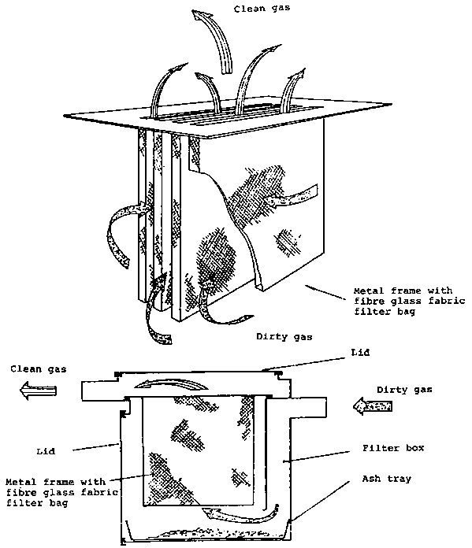
b) Dual fuelling of pre-chamber and swirl chamber diesel engines
Tests with dual fuel operation of one pre-chamber and one swirl chamber diesel engine have been reported by Nordström (33). The tests indicate that these engines are not suitable for dual fuel operation, since too early ignition of the gas/air mixture, leading to diesel-knocking, will occur unless the load is fairly low or the gas/air mixture is clean, leading to a moderate diesel oil substitution.
c) Dual fuelling of direct injection engines
Studies of the performance of direct injection diesel engines operated in a dual fuel mode with a minimum diesel oil injection, have been carried out at the National Swedish Testing Institute for Agricultural Machinery. The tests are still going on. A list of the tested vehicles is given in Tables 3.10 and 3.11.
The experience is that the modifications required are generally simple and limited to:
- installation of a control lever for obtaining low injection quantities and maintaining the possibility for normal injection by straight diesel operation;- modification of the injection pump to provide suitable injection characteristics (constant injection per stroke at varying engine speed);
- advancing the injection timing.
The direct injection engines will normally operate well in dual fuel mode with a compression ratio of 1:16 to 1:16.5. Diesel knocking may occur in some cases. The compression ratio must then be reduced by use of double cylinder head gaskets. The reduction of the injection amount is accomplished for in-line pumps by mechanically constraining the movement of the control rod.
Suitable injection characteristics for such pumps are obtained by use of a specially designed delivery valve, see Nordstrom (33). For distributor pumps, the flow is reduced by adjustment of the metering valve. Distributor pumps may suffer from inadequate cooling and lubrication if the injection flow is reduced since there will be a very small supply of cold fuel to the pump. This can be remedied by leading the excess flow from the pump to the fuel tank rather than recirculating it to the filter, see Fig. 3.7. Depending on the injector design it may be necessary to modify the mounting of the injectors or to replace the injectors in order to avoid coking as a result of high injector temperature caused by the low injection flow. An example of such modification is given in section 3.2.2.
The studies of the effects of injection timing on power output indicate that the injection timing is not very important for engine speeds below 1200 rpm, and that advancing the injection timing grows more important as the speed increases. Injection advancement beyond 35 - 40° was observed to give pressure fluctuations.- Compromises between maximum power at high rpm and disturbance free combustion at low rpm may be necessary. It is recommended that the injection timing setting for dual fuel operation be determined by bench-tests for each type of engine.
Table 3.6 shows examples of performance data determined in laboratory tests for two direct injection engines operated on dual fuel. The full power efficiency of the engines is about 35 percent. The diesel oil substitution is between 80 percent and 90 percent.
The power loss in dual fuel operation was found to be 10 - 38 percent, see Tables 3.10 and 3.11.
a) Fuel specifications
The practical tests with gasifiers for wood chips developed at the National Swedish Testing Institute for Agricultural Machinery have been carried out with fuel moisture contents (wet basis) of 10 - 20 percent. The upper limit for the moisture content for acceptable gas quality is specified as 30 percent. If the moisture content of the fuel exceeds about 40 percent, the gas will not be combustible.
The size distribution for wood chips may vary depending on the characteristics of the chipper. Long sticks may cause bunker flow problems. It is recommended that the chips be screened to remove fines (below 10 x 10 mm) and coarse pieces (max. size about 6-0 mm). A typical size distribution of suitable wood chips is given in Table 3.7.
Tests have been run with a gasifier type F5 mounted on a tractor to study the effect of the size distribution on the maximum power output. The results are summarized in Table 3.8.
Table 3.6 Results of performance tests for direct injection engines operated in dual fuel mode.
|
Engine speed |
Power output |
Specific fuel consumption |
Efficiency |
Diesel oil fraction of fuel |
|
|
Producer gas |
Diesel oil |
||||
|
rpm |
kW |
m³/kWh |
g/kWh |
% |
% |
|
Truck, Scania Vabis L5150 |
|||||
|
Cylinder volume 6.2 dm³, compression ratio 16:1 |
|||||
|
Full power test |
|||||
|
1000 |
36.7 |
1.63 |
19.1 |
36.0 |
8.3 |
|
1200 |
43.2 |
1.63 |
23.2 |
35.6 |
10.0 |
|
1400 |
49.6 |
1.63 |
26.3 |
35.0 |
11.1 |
|
1600 |
55.5 |
1.61 |
28.8 |
34.9 |
12.2 |
|
1800 |
60.2 |
1.65 |
30.8 |
33.8 |
12.7 |
|
2000 |
62.8 |
1.75 |
32.5 |
32.0 |
12.6 |
|
2200 |
64.6 |
1.84 |
34.0 |
30.5 |
12.6 |
|
Tractor, Fordson Power Major |
|||||
|
Cylinder volume 3.6 dm³ |
|||||
|
Part load test |
|||||
|
1600 |
29.6 |
1.64 |
48.0 |
32.5 |
19.0 |
|
1800 |
25.1 |
1.67 |
57.3 |
30.8 |
21.6 |
|
1840 |
22.2 |
1.80 |
64.0 |
28.3 |
22.1 |
|
1890 |
14.8 |
2.40 |
84.0 |
21.2 |
21.8 |
|
1920 |
7.4 |
4.00 |
183.0 |
12.0 |
26.8 |
Figure 3.7 Modification of the fuel system for dual fuel operation
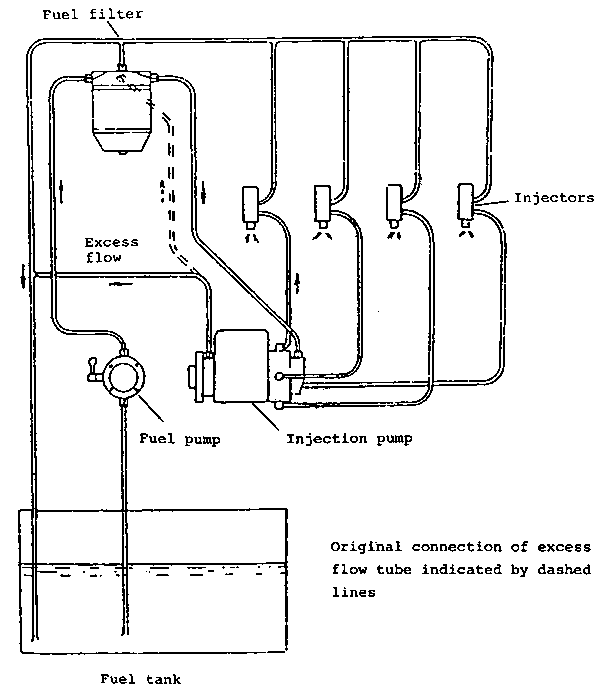
The power increase can partly be explained by reduced pressure losses in the gasifier. It appears that in these tests the gas quality was also improved when the fines were removed, since less than 50 percent of the power increase can be explained by reduced pressure losses.
According to these tests, removal of the fines (below 5 mm ) gives a substantial power increase at a fairly small expense, i.e. about 3 percent increase of the feedstock cost. Screening for removal of material in the range 5 - 10 mm may also be considered worthwhile, whereas further screening does not appear to give any power increase.
Table 3.7 Typical size distribution for wood chips suitable for vehicle gasifiers.
|
Size range |
% weight |
|
Below 5 x 5 mm |
2 - 3 |
|
5 x 5 - 10 x 10 |
6 - 11 |
|
10 x 10 - 15 x 15 |
12 - 19 |
|
15 x 15 - 20 x 20 |
20 - 24 |
|
20 x 20 - 25 x 25 |
25 - 30 |
|
25 x 25 - 30 x 30 |
9 - 20 |
|
30 x 30 - 35 x 35 |
about 5 |
|
35 x 35 and above |
about 3 |
Table 3.8 Improvement of maximum power output by screening of wood chips
|
Size range |
Unsieved chips |
5-40 mm |
10-40 mm |
15-40 mm |
|
Sieving loss % |
- |
3 |
14 |
34 |
|
Pressure drop across gasifier bar |
0.18 |
0.13 |
0.09 |
0.08 |
|
Power output at 1800 rpm kW |
16.8 |
18.1 |
21.1 |
21.0 |
|
Power increase by sieving % |
0 |
7.7 |
25.5 |
25.5 |
b) Use of wood blocks
The gasifier for wood chips can easily be converted to use of wood blocks by replacing the conical screen by a perforated cylinder, see Fig. 3.2. The power output will be improved by at least 10 per cent when wood blocks are used, as a result of the reduction of pressure losses in the gasifer.
c) Use of other fuels
Scoping tests with biomass fuels other than wood blocks and wood chips in these types of gasifiers have been carried out in order to provide a basis for assessment of the needs for further research and development in case such other fuels are to be used in some applications.
Table 3.9 summarizes the results of these tests, some of which have been reported in detail by Höglund (18). Of the tested fuels, only coconut shell showed a performance similar to or better than wood chips. Milled peat, wheat straw cubes, and pressed sugarcane appeared to be unsuitable.
It appears that with rape straw pellets, wet carbonized peat pellets, sod peat and probably also coconut husk, opening of the gasifier for removal of slag may be required every 6 - 8 hours of operation. This can be done in 30 - 45 minutes and this frequent cleaning may be acceptable in some applications. If so, it appears possible to use these fuels if some loss of power is accepted. If frequent cleaning of the gasifier is not acceptable, the gasifier design must be modified to eliminate the slagging problem. Studies on these lines are at present being carried out by the Beijer Institute.